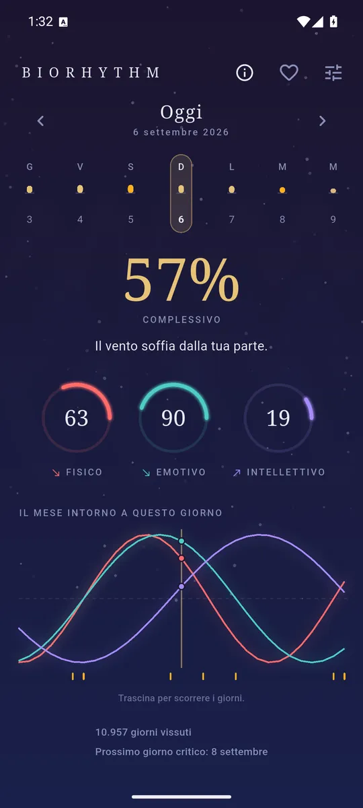
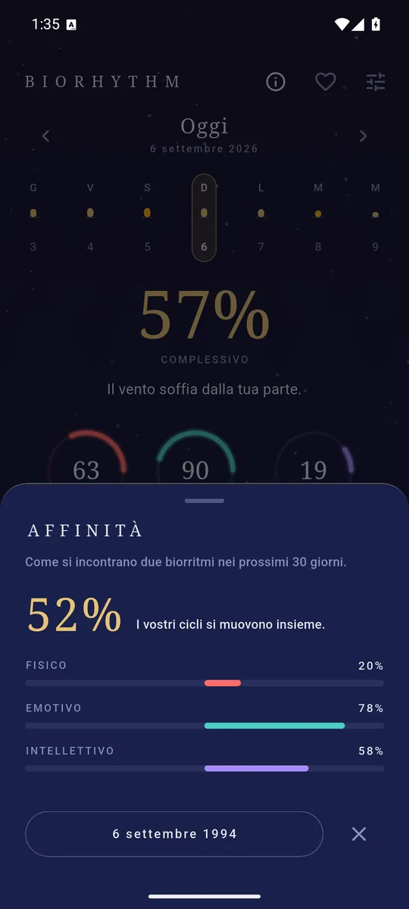
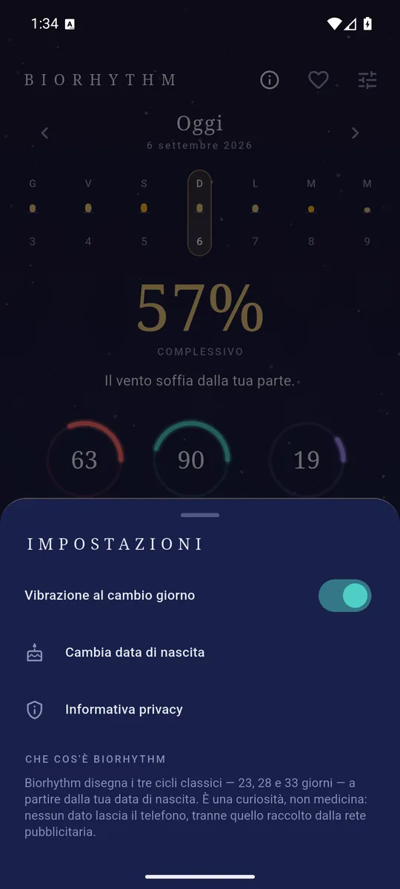

ItalianoEnglish
A date of birth and three numbers that repeat from there on for good: 23 days, 28 days, 33 days. Biorhythm draws them and opens straight on today — three dials, the average in large type, and the month around you underneath.

The arc sweeps up when the cycle is high: the sign reads before the number. 
Two dates of birth, and a phase difference that will never change. 
A date of birth is all it needs, and it stays in here.
What it does
- Three dials, one colour each. The arc sweeps up when the cycle is high and down when it is low, and an arrow says whether it is rising or falling: the direction reads from across the room, the number only after.
- The day's number. The three cycles averaged, in large type, with one line saying what it amounts to — a day to spend, a day to take gently, a day to postpone the decision.
- Critical days. When a cycle crosses zero the day is marked, and that is the least predictable point of the whole cycle. The date of the next one is always on screen: knowing it beforehand is the point.
- The month around you. Fifteen days either side, in a chart you drag back and forth with a finger.
- Affinity. Add somebody else's date of birth and watch how the two sets of cycles meet.
- In English and Italian, following the phone's language.
Affinity is a number that never changes
Two people born a fixed number of days apart keep the same phase difference for life: the cycles run on, but the gap between them does not. So affinity here is not a score that rises today and falls tomorrow — it is a property of the two dates, worked out once and true from then on. An app that made it wobble day by day would be making it up.
A curiosity, not a diagnosis
Biorhythms are a late-nineteenth-century construction, not a measurement of the body: the three periods are fixed, the same for everyone, and they know nothing about how you slept or how you feel. This is not a medical or diagnostic tool, and nothing about your health should be decided with it. Biorhythm says so inside the app, not only here.
Your data stays yours
Your date of birth — and the other person's, if you add an affinity — is the only thing the app keeps, and it stays on the phone. No sign-up, no login, no backend: nothing you type is sent to us. The only data leaving the device is what the ad network collects to keep the app free.
How it is paid for
One banner anchored at the bottom, and that is all: no ads inside the dials, no subscription, no feature held hostage.
Where to find it
Not on Google Play yet. The link will appear here when it is.